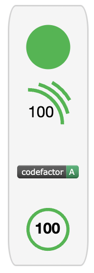

Fitzhi supervise la performance technique de la DSI.
Il ne requiert aucune saisie additionnelle.
Tous les indicateurs sont construits depuis les outils existants.
Fitzhì adresse...
les projets
les compétences
les équipes

le Patchwork Projet
Le patchwork est la synthèse technique, à date, du portfolio.
Chaque tuile représente une application.
- la taille représente le nombre de lignes
- la couleur, l'évaluation technique calculée par Fitzhì

La ligne d'horizon
L'historique du portefeuille projets depuis le premier commit jusqu'au petit dernier, à la date du jour.
La couleur indique ici le risque staffing de chaque projet mesuré par Fitzhì.
Par exemple, le fameux projet Spring Framework qui était vert en 2014, a connu une année 2015 difficile, avant de revenir à la normale en 2016


La couverture des compétences
Ce diagramme représente les équipes actives et capables de maintenir les écosystèmes de votre portefeuille. Chaque tuile figure le volume et le niveau de risque par compétence.
- Une "tuile de compétences" de cette couleur est sécurisée : Il y a suffisament de développeurs pour maintenir les projets.
- A contrario, cette couleur signale un manque de développeurs, un désert technique.
le capital « compétences » de l'organisation
le capital « compétences » de l'organisation
Ce graphe suit mensuellement le niveau global de compétences de la DSI.
Chaque développeur peut avoir 5 niveaux (★) de séniorité par compétence.
Le CTO de Fitzhì se résume dans le bandeau ci-dessous :

Projets
Fitzhi élabore aussi des tableaux de bord individuels, par projet. Un badge est construit. Il permet de résumer la situation d'un seul regard.

La couverture du code
L'efficacité opérationnelle est souvent tributaire du turnover des équipes.Ce diagramme (et son indicateur associé) présente la hiérarchie de l'application au regard des développeurs disponibles, ceux là même qui connaissent déjà l'application et qui pourront assurer son maintien en condition opérationnelle.
Vous pouvez naviguer dans l'arborescence du project en clickant sur les sections du diagramme.
- Les sections vertes sont les packages sécurisés, avec suffisamment de développeurs.
- Les sections rouges sont les déserts. Il n'y a plus personne dans les effectifs pour maintenir le code.
Ici en l'espèce, a été configuré l'ajout du badge de la plateforme codefactor.io™.